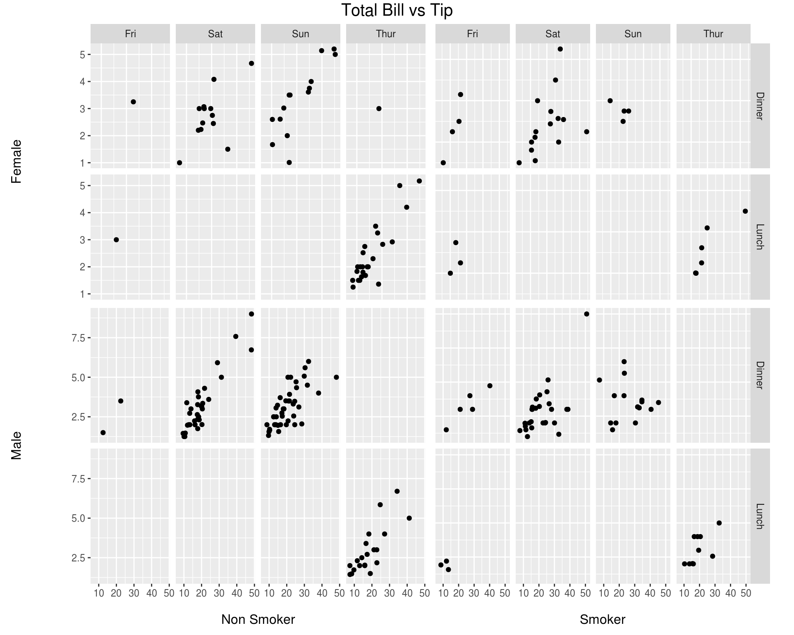
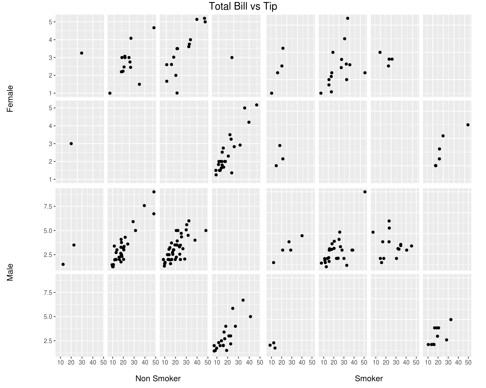
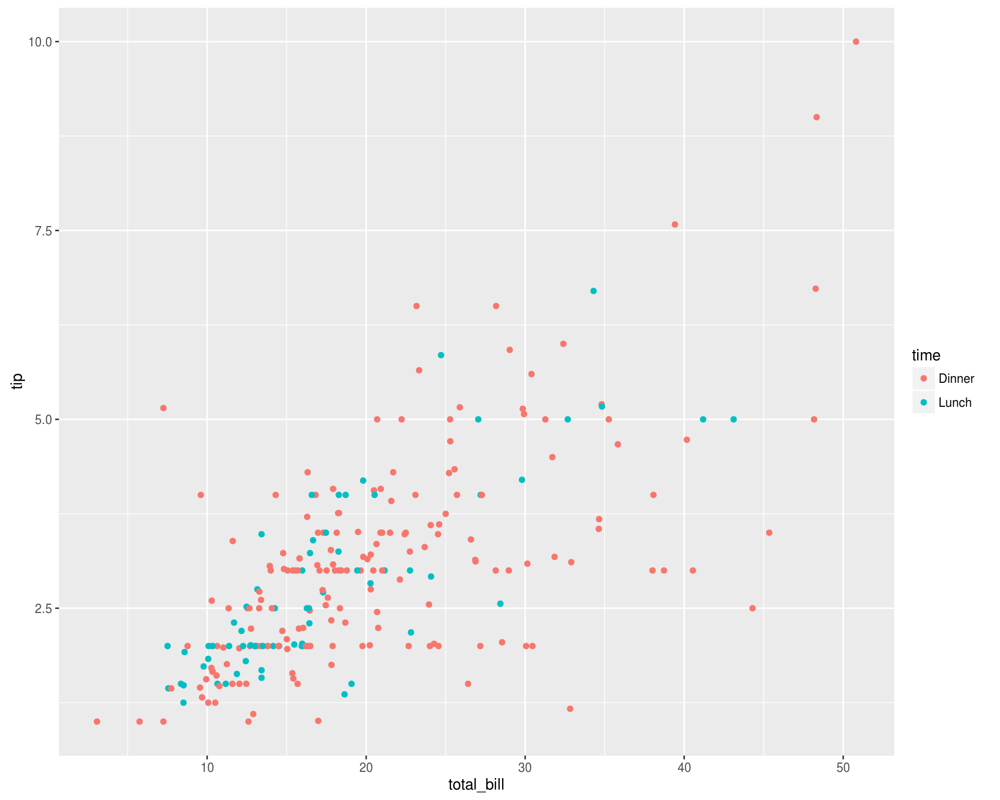

GGally
Welcome to the GGally documentation page.
The following topic sections are alphabetically sorted.
GGally::ggcoef
The purpose of this function is to quickly plot the coefficients of a model.
Joseph Larmarange
May 16, 2016
Quick coefficients plot
To work automatically, this function requires the broom package. Simply call ggcoef with a model object. It could be the result of lm, glm or any other model covered by broom and its tidy method1.
reg <- lm(Sepal.Length ~ Sepal.Width + Petal.Length + Petal.Width, data = iris)
ggcoef(reg)
In the case of a logistic regression (or any other model for which coefficients are usually exponentiated), simply indicated exponentiate = TRUE. Note that a logarithmic scale will be used for the x-axis.
d <- as.data.frame(Titanic)
log.reg <- glm(Survived ~ Sex + Age + Class, family = binomial, data = d, weights = d$Freq)
ggcoef(log.reg, exponentiate = TRUE)Customizing the plot
You can use conf.int, vline and exclude_intercept to display or not confidence intervals as error bars, a vertical line for x = 0 (or x = 1 if coeffcients are exponentiated) and the intercept.
ggcoef(reg, vline = FALSE, conf.int = FALSE, exclude_intercept = TRUE)
See the help page of ggcoef for the full list of arguments that could be used to personalize how error bars and the vertical line are plotted.
ggcoef(
log.reg,
exponentiate = TRUE,
vline_color = "red",
vline_linetype = "solid",
errorbar_color = "blue",
errorbar_height = .25
)
Additional parameters will be passed to geom_point.
ggcoef(log.reg, exponentiate = TRUE, color = "purple", size = 5, shape = 18)
Finally, you can also customize the aesthetic mapping of the points.
library(ggplot2)
ggcoef(log.reg, exponentiate = TRUE, mapping = aes(x = estimate, y = term, size = p.value)) +
scale_size_continuous(trans = "reverse")
Custom data frame
You can also pass a custom data frame to ggcoef. The following variables are expected:
term(except if you customize the mapping)estimate(except if you customize the mapping)conf.lowandconf.high(only if you want to display error bars)
cust <- data.frame(
term = c("male vs. female", "30-49 vs. 18-29", "50+ vs. 18-29", "urban vs. rural"),
estimate = c(.456, 1.234, 1.897, 1.003),
conf.low = c(.411, 1.042, 1.765, 0.678),
conf.high = c(.498, 1.564, 2.034, 1.476),
variable = c("sex", "age", "age", "residence")
)
cust$term <- factor(cust$term, cust$term)
ggcoef(cust, exponentiate = TRUE)ggcoef(
cust,
exponentiate = TRUE,
mapping = aes(x = estimate, y = term, colour = variable),
size = 5
)
GGally::ggduo
Barret Schloerke
July 4, 2016
The purpose of this function is to display two grouped data in a plot matrix. This is useful for canonical correlation analysis, multiple time series analysis, and regression analysis.
Canonical Correlation Analysis
This example is derived from
R Data Analysis Examples: Canonical Correlation Analysis. UCLA: Statistical Consulting Group. from http://www.ats.ucla.edu/stat/r/dae/canonical.htm (accessed June 23, 2016).
Example 1. A researcher has collected data on three psychological variables, four academic variables (standardized test scores) and gender for 600 college freshman. She is interested in how the set of psychological variables relates to the academic variables and gender. In particular, the researcher is interested in how many dimensions (canonical variables) are necessary to understand the association between the two sets of variables."
psych <- read.csv("http://www.ats.ucla.edu/stat/data/mmreg.csv")
colnames(psych) <- c("Control", "Concept", "Motivation", "Read", "Write", "Math", "Science", "Sex")
psych <- data.frame(
Motivation = psych$Motivation,
Self.Concept = psych$Concept,
Locus.of.Control = psych$Control,
Read = psych$Read,
Write = psych$Write,
Math = psych$Math,
Science = psych$Science,
Sex = c("0" = "Male", "1" = "Female")[as.character(psych$Sex)]
)First, look at the within correlation using ggpairs.
ggpairs(psych, 1:3)ggpairs(psych, 4:8)`stat_bin()` using `bins = 30`. Pick better value with `binwidth`.
`stat_bin()` using `bins = 30`. Pick better value with `binwidth`.
`stat_bin()` using `bins = 30`. Pick better value with `binwidth`.
`stat_bin()` using `bins = 30`. Pick better value with `binwidth`.Next, look at the between correlation using ggduo.
ggduo(psych, 1:3, 4:8, types = list(continuous = "smooth_lm"))`stat_bin()` using `bins = 30`. Pick better value with `binwidth`.
`stat_bin()` using `bins = 30`. Pick better value with `binwidth`.
`stat_bin()` using `bins = 30`. Pick better value with `binwidth`.Since ggduo does not have a upper section to display the correlation values, we may use a custom function to add the information in the continuous plots. The strips may be removed as each group name may be recovered in the outer axis labels.
lm_with_cor <- function(data, mapping, ..., method = "pearson") {
x <- data[[deparse(mapping$x)]]
y <- data[[deparse(mapping$y)]]
cor <- cor(x, y, method = method)
ggally_smooth_lm(data, mapping, ...) +
ggplot2::geom_label(
data = data.frame(
x = min(x, na.rm = TRUE),
y = max(y, na.rm = TRUE),
lab = round(cor, digits = 3)
),
mapping = ggplot2::aes(x = x, y = y, label = lab),
hjust = 0, vjust = 1,
size = 5, fontface = "bold"
)
}
ggduo(psych, 1:3, 4:8, types = list(continuous = lm_with_cor), showStrips = FALSE)`stat_bin()` using `bins = 30`. Pick better value with `binwidth`.
`stat_bin()` using `bins = 30`. Pick better value with `binwidth`.
`stat_bin()` using `bins = 30`. Pick better value with `binwidth`.Multiple Time Series Analysis
While displaying multiple time series vertically over time, such as + facet_grid(time ~ .), ggduo can handle both continuous and discrete data. ggplot2 does not mix discrete and continuous data on the same axis.
library(ggplot2)
econ <- as.data.frame(economics)
econ$random.group <- sample(1:3, nrow(econ), replace = TRUE)
qplot(
date, value,
data = reshape::melt.data.frame(econ, "date"),
geom = c("smooth", "point")
) +
facet_grid(variable ~ ., scales = "free_y")Instead, we may use ggduo to display the data.
econ$random.group <- c("A", "B", "C")[econ$random.group]
ggduo(econ, "date", 2:7)`stat_bin()` using `bins = 30`. Pick better value with `binwidth`.Since the labels do not fit well, we will adjust them.
pm <- ggduo(
econ, 1, 2:7,
columnLabelsX = "date",
columnLabelsY = c("personal consumption\nexpenditures (B)", "total\npopulation (K)", "personal savings\nrate %", "median duration of\nunemployment (week)", "number of\nunemployed (K)", "random\ngroup")
) +
theme(
axis.title.y = element_text(size = 8.5)
)
print(pm, leftWidthProportion = 0.08)`stat_bin()` using `bins = 30`. Pick better value with `binwidth`.Regression Analysis
Since ggduo may take custom functions just like ggpairs, we will make a custom function that displays the residuals with a red line at 0 and all other y variables will receive a simple linear regression plot.
Note: the marginal residuals are calculated before plotting and the y_range is found to display all residuals on the same scale.
swiss <- datasets::swiss
# add a 'fake' column
swiss$Residual <- seq_len(nrow(swiss))
# calculate all residuals prior to display
residuals <- lapply(swiss[2:6], function(x) {
summary(lm(Fertility ~ x, data = swiss))$residuals
})
# calculate a consistent y range for all residuals
y_range <- range(unlist(residuals))
# custom function to display continuous data. If the y variable is "Residual", do custom work.
lm_or_resid <- function(data, mapping, ..., line_color = "red", line_size = 1) {
if (as.character(mapping$y) != "Residual") {
return(ggally_smooth_lm(data, mapping, ...))
}
# make residual data to display
resid_data <- data.frame(
x = data[[as.character(mapping$x)]],
y = residuals[[as.character(mapping$x)]]
)
ggplot(data = data, mapping = mapping) +
geom_hline(yintercept = 0, color = line_color, size = line_size) +
ylim(y_range) +
geom_point(data = resid_data, mapping = aes(x = x, y = y), ...)
}
# plot the data
ggduo(
swiss,
2:6, c(1,7),
types = list(continuous = lm_or_resid)
)# change line to be thicker and blue and the points to be slightly transparent
ggduo(
swiss,
2:6, c(1,7),
types = list(
continuous = wrap(lm_or_resid,
alpha = 0.7,
line_color = "blue",
line_size = 3
)
)
)GGally::glyphs
Hadley Wickham, Charlotte Wickham, Di Cook, Heike Hofmann
Nov 6, 2015
This function rearranges data to be able to construct a glyph plot
library(ggplot2)
data(nasa)
temp.gly <- glyphs(nasa, "long", "day", "lat", "surftemp", height=2.5)Using width 2.38ggplot(temp.gly, ggplot2::aes(gx, gy, group = gid)) +
add_ref_lines(temp.gly, color = "grey90") +
add_ref_boxes(temp.gly, color = "grey90") +
geom_path() +
theme_bw() +
labs(x = "", y = "")This shows a glyphplot of monthly surface temperature for 6 years over Central America. You can see differences from one location to another, that in large areas temperature doesn’t change much. There are large seasonal trends in the top left over land.
Rescaling in different ways puts emphasis on different components, see the examples in the referenced paper. And with ggplot2 you can make a map of the geographic area underlying the glyphs.
References
Wickham, H., Hofmann, H., Wickham, C. and Cook, D. (2012) Glyph-maps for Visually Exploring Temporal Patterns in Climate Data and Models, Environmetrics, 23(5):151-182.
GGally::ggmatrix
Barret Schloerke
Oct 29, 2015
ggmatrix is a function for managing multiple plots in a matrix-like layout. It was designed to adapt to any number of columns and rows. This allows for very customized plot matrices.
Generic Example
The examples below use plots labeled 1 to 6 to distinguish where the plots are being placed.
plotList <- list()
for (i in 1:6) {
plotList[[i]] <- ggally_text(paste("Plot #", i, sep = ""))
}
# bare minimum of plotList, nrow, and ncol
pm <- ggmatrix(plotList, 2, 3)
pm# provide more information
pm <- ggmatrix(
plotList,
nrow = 2, ncol = 3,
xAxisLabels = c("A", "B", "C"),
yAxisLabels = c("D", "E"),
title = "Matrix Title"
)
pm
# display plots in column order
pm <- ggmatrix(
plotList,
nrow = 2, ncol = 3,
xAxisLabels = c("A", "B", "C"),
yAxisLabels = c("D", "E"),
title = "Matrix Title",
byrow = FALSE
)
pmMatrix Subsetting
Individual plots may be retrieved from the plot matrix and can be placed in the plot matrix.
pm <- ggmatrix(
plotList,
nrow = 2, ncol = 3,
xAxisLabels = c("A", "B", "C"),
yAxisLabels = c("D", "E"),
title = "Matrix Title"
)
pmp2 <- pm[1,2]
p3 <- pm[1,3]
p2
p3
pm[1,2] <- p3
pm[1,3] <- p2
pmThemes
library(ggplot2)
pm <- ggmatrix(
plotList,
nrow = 2, ncol = 3,
xAxisLabels = c("A", "B", "C"),
yAxisLabels = c("D", "E"),
title = "Matrix Title",
byrow = FALSE
)
pm <- pm + theme_bw()
pmAxis Control
The X and Y axis have booleans to turn on/off the individual plot’s axes on the bottom and left sides of the plot matrix. To save time, showAxisPlotLabels can be set to override showXAxisPlotLabels and showYAxisPlotLabels.
pm <- ggmatrix(
plotList, nrow = 2, ncol = 3,
xAxisLabels = c("A", "B", "C"),
yAxisLabels = c("D", "E"),
title = "No Left Plot Axis",
showYAxisPlotLabels = FALSE
)
pmpm <- ggmatrix(
plotList, nrow = 2, ncol = 3,
xAxisLabels = c("A", "B", "C"),
yAxisLabels = c("D", "E"),
title = "No Bottom Plot Axis",
showXAxisPlotLabels = FALSE
)
pmpm <- ggmatrix(
plotList, nrow = 2, ncol = 3,
xAxisLabels = c("A", "B", "C"),
yAxisLabels = c("D", "E"),
title = "No Plot Axes",
showAxisPlotLabels = FALSE
)
pmStrips Control
By default, the plots in the top row and the right most column will display top-side and right-side strips respectively (showStrips = NULL). If all strips need to appear in each plot, showStrips may be set to TRUE. If all strips should not be displayed, showStrips may be set to FALSE.
data(tips, package = "reshape")
plotList <- list(
qplot(total_bill, tip, data = subset(tips, smoker == "No" & sex == "Female")) +
facet_grid(time ~ day),
qplot(total_bill, tip, data = subset(tips, smoker == "Yes" & sex == "Female")) +
facet_grid(time ~ day),
qplot(total_bill, tip, data = subset(tips, smoker == "No" & sex == "Male")) +
facet_grid(time ~ day),
qplot(total_bill, tip, data = subset(tips, smoker == "Yes" & sex == "Male")) +
facet_grid(time ~ day)
)
pm <- ggmatrix(
plotList, nrow = 2, ncol = 2,
yAxisLabels = c("Female", "Male"),
xAxisLabels = c("Non Smoker", "Smoker"),
title = "Total Bill vs Tip",
showStrips = NULL # default
)
pm
pm <- ggmatrix(
plotList, nrow = 2, ncol = 2,
yAxisLabels = c("Female", "Male"),
xAxisLabels = c("Non Smoker", "Smoker"),
title = "Total Bill vs Tip",
showStrips = TRUE
)
pmpm <- ggmatrix(
plotList, nrow = 2, ncol = 2,
yAxisLabels = c("Female", "Male"),
xAxisLabels = c("Non Smoker", "Smoker"),
title = "Total Bill vs Tip",
showStrips = FALSE
)
pm
Custom Printing
Since ggmatrix is not a “true” ggplot2 object, spacing between the plot axis labels and the matrix labels is not perfect. There are a few print.ggmatrix parameters to help with this: leftWidthProportion, bottomHeightProportion, and spacingProportion. Each parameter refers to the proportional size of ‘left plot axis label area’, ‘bottom plot axis label area’, and ‘spacing between plots’ relative to a single plotting area. So, if a single plot is 2 inches wide and spacingProportion = 0.03, then the horizontal space between each plot will be 0.06 inches.
data(presidential, package = "ggplot2")
plotList <- list(
qplot(name, data = presidential, geom = "bar", fill = party) + ylim(c(0,6)) + coord_flip(),
qplot(party, data = presidential, geom = "bar", fill = party) + coord_flip()
)
pm <- ggmatrix(
plotList,
2, 1,
yAxisLabels = c("Presidents", "Party"),
xAxisLabels = c("Count"),
title = "President Term Length"
)
pm # default spacing# use print.ggmatrix parameters
print(pm, leftWidthProportion = 0.12, spacingProportion = 0.05)GGally::ggnetworkmap
Amos Elberg
January 10, 2015
ggnetworkmap is a function for plotting elegant maps using ggplot2. It builds on ggnet by allowing to draw a network over a map, and is particularly intended for use with ggmap.
Example: US airports
This example is based on a tutorial by Nathan Yau at Flowing Data.
suppressMessages(library(network))
suppressMessages(library(sna))
suppressMessages(library(maps))
suppressMessages(library(ggplot2))
airports <- read.csv("http://datasets.flowingdata.com/tuts/maparcs/airports.csv", header = TRUE)
rownames(airports) <- airports$iata
# select some random flights
set.seed(1234)
flights <- data.frame(
origin = sample(airports[200:400, ]$iata, 200, replace = TRUE),
destination = sample(airports[200:400, ]$iata, 200, replace = TRUE)
)
# convert to network
flights <- network(flights, directed = TRUE)
# add geographic coordinates
flights %v% "lat" <- airports[ network.vertex.names(flights), "lat" ]
flights %v% "lon" <- airports[ network.vertex.names(flights), "long" ]
# drop isolated airports
delete.vertices(flights, which(degree(flights) < 2))
# compute degree centrality
flights %v% "degree" <- degree(flights, gmode = "digraph")
# add random groups
flights %v% "mygroup" <- sample(letters[1:4], network.size(flights), replace = TRUE)
# create a map of the USA
usa <- ggplot(map_data("usa"), aes(x = long, y = lat)) +
geom_polygon(aes(group = group), color = "grey65",
fill = "#f9f9f9", size = 0.2)
delete.vertices(flights, which(flights %v% "lon" < min(usa$data$long)))
delete.vertices(flights, which(flights %v% "lon" > max(usa$data$long)))
delete.vertices(flights, which(flights %v% "lat" < min(usa$data$lat)))
delete.vertices(flights, which(flights %v% "lat" > max(usa$data$lat)))
# overlay network data to map
ggnetworkmap(usa, flights, size = 4, great.circles = TRUE,
node.group = mygroup, segment.color = "steelblue",
ring.group = degree, weight = degree)
Example: Twitter spambots
This next example uses data from a Twitter spam community identified while exploring and trying to clear-up a group of tweets. After coloring the nodes based on their centrality, the odd structure stood out clearly.
data(twitter_spambots)# create a world map
world <- fortify(map("world", plot = FALSE, fill = TRUE))
world <- ggplot(world, aes(x = long, y = lat)) +
geom_polygon(aes(group = group), color = "grey65",
fill = "#f9f9f9", size = 0.2)
# view global structure
ggnetworkmap(world, twitter_spambots)Is the network really concentrated in the U.S.? Probably not. One of the odd things about the network, is a much higher proportion of the users gave locations that could be geocoded, than Twitter users generally.
Let’s see the network topology
ggnetworkmap(net = twitter_spambots, arrow.size = 0.5)
Coloring nodes according to degree centrality can highlight network structures.
# compute indegree and outdegree centrality
twitter_spambots %v% "indegree" <- degree(twitter_spambots, cmode = "indegree")
twitter_spambots %v% "outdegree" <- degree(twitter_spambots, cmode = "outdegree")
ggnetworkmap(net = twitter_spambots,
arrow.size = 0.5,
node.group = indegree,
ring.group = outdegree, size = 4) +
scale_fill_continuous("Indegree", high = "red", low = "yellow") +
labs(color = "Outdegree")
Some Twitter attributes have been included as vertex attributes.
# show some vertex attributes associated with each account
ggnetworkmap(net = twitter_spambots,
arrow.size = 0.5,
node.group = followers,
ring.group = friends,
size = 4,
weight = indegree,
label.nodes = TRUE, vjust = -1.5) +
scale_fill_continuous("Followers", high = "red", low = "yellow") +
labs(color = "Friends") +
scale_color_continuous(low = "lightgreen", high = "darkgreen")GGally::ggpairs
Barret Schloerke
Oct 29, 2015
ggpairs is a special form of a ggmatrix that produces a pairwise comparison of multivariate data. By default, ggpairs provides two different comparisons of each pair of columns and displays either the density or count of the respective variable along the diagonal. With different parameter settings, the diagonal can be replaced with the axis values and variable labels.
There are many hidden features within ggpairs. Please take a look at the examples below to get the most out of ggpairs.
Columns and Mapping
The columns displayed default to all columns of the provided data. To subset to only a few columns, use the columns parameter.
data(tips, package = "reshape")
pm <- ggpairs(tips)
pm`stat_bin()` using `bins = 30`. Pick better value with `binwidth`.
`stat_bin()` using `bins = 30`. Pick better value with `binwidth`.
`stat_bin()` using `bins = 30`. Pick better value with `binwidth`.
`stat_bin()` using `bins = 30`. Pick better value with `binwidth`.
`stat_bin()` using `bins = 30`. Pick better value with `binwidth`.
`stat_bin()` using `bins = 30`. Pick better value with `binwidth`.
`stat_bin()` using `bins = 30`. Pick better value with `binwidth`.
`stat_bin()` using `bins = 30`. Pick better value with `binwidth`.
`stat_bin()` using `bins = 30`. Pick better value with `binwidth`.
`stat_bin()` using `bins = 30`. Pick better value with `binwidth`.
`stat_bin()` using `bins = 30`. Pick better value with `binwidth`.
`stat_bin()` using `bins = 30`. Pick better value with `binwidth`.## too many plots for this example.
## reduce the columns being displayed
## these two lines of code produce the same plot matrix
pm <- ggpairs(tips, columns = c(1, 6, 2))
pm <- ggpairs(tips, columns = c("total_bill", "time", "tip"), columnLabels = c("Total Bill", "Time of Day", "Tip"))
pm`stat_bin()` using `bins = 30`. Pick better value with `binwidth`.
`stat_bin()` using `bins = 30`. Pick better value with `binwidth`.Aesthetics can be applied to every subplot with the mapping parameter.
library(ggplot2)
pm <- ggpairs(tips, mapping = aes(color = sex), columns = c("total_bill", "time", "tip"))
pm`stat_bin()` using `bins = 30`. Pick better value with `binwidth`.
`stat_bin()` using `bins = 30`. Pick better value with `binwidth`.Since the plots are default plots (or are helper functions from GGally), the aesthetic color is altered to be appropriate. Looking at the example above, ‘tip’ vs ‘total_bill’ (pm[3,1]) needs the color aesthetic, while ‘time’ vs ‘total_bill’ needs the fill aesthetic. If custom functions are supplied, no aesthetic alterations will be done.
Matrix Sections
There are three major sections of the pairwise matrix: lower, upper, and diag. The lower and upper may contain three plot types: continuous, combo, and discrete. The ‘diag’ only contains either continuous or discrete.
continuous: both X and Y are continuous variablescombo: one X and Y variable is discrete while the other is continuousdiscrete: both X and Y are discrete variables
To make adjustments to each section, a list of information may be supplied. The list can be comprised of the following elements:
continuous:- a character string representing the tail end of a
ggally_NAMEfunction, or a custom function - current valid
upper$continuousandlower$continuouscharacter strings:'points','smooth','density','cor','blank' - current valid
diag$continuouscharacter strings:'densityDiag','barDiag','blankDiag'
- a character string representing the tail end of a
combo:- a character string representing the tail end of a
ggally_NAMEfunction, or a custom function. (not applicable for adiaglist) - current valid
upper$comboandlower$combocharacter strings:'box','dot','facethist','facetdensity','denstrip','blank'
- a character string representing the tail end of a
discrete:- a character string representing the tail end of a
ggally_NAMEfunction, or a custom function - current valid
upper$discreteandlower$discretecharacter strings:'ratio','facetbar','blank' - current valid
diag$discretecharacter strings:'barDiag','blankDiag'
- a character string representing the tail end of a
mapping: if mapping is provided, only the section’s mapping will be overwritten
library(ggplot2)
pm <- ggpairs(
tips, columns = c("total_bill", "time", "tip"),
lower = list(
continuous = "smooth",
combo = "facetdensity",
mapping = aes(color = time)
)
)
pmA section list may be set to the character string "blank" or NULL if the section should be skipped when printed.
pm <- ggpairs(
tips, columns = c("total_bill", "time", "tip"),
upper = "blank",
diag = NULL
)
pm`stat_bin()` using `bins = 30`. Pick better value with `binwidth`.
`stat_bin()` using `bins = 30`. Pick better value with `binwidth`.Custom Functions
The ggally_NAME functions do not provide all graphical options. Instead of supplying a character string to a continuous, combo, or discrete element within upper, lower, or diag, a custom function may be given.
The custom function should follow the api of
custom_function <- function(data, mapping, ...){
# produce ggplot2 object here
}There is no requirement to what happens within the function, as long as a ggplot2 object is returned.
my_bin <- function(data, mapping, ..., low = "#132B43", high = "#56B1F7") {
ggplot(data = data, mapping = mapping) +
geom_bin2d(...) +
scale_fill_gradient(low = low, high = high)
}
pm <- ggpairs(
tips, columns = c("total_bill", "time", "tip"),
lower = list(
continuous = my_bin
)
)
pm`stat_bin()` using `bins = 30`. Pick better value with `binwidth`.
`stat_bin()` using `bins = 30`. Pick better value with `binwidth`.Function Wrapping
The examples above use default parameters to each of the subplots. One of the immediate parameters to be set it binwidth. This parameters is only needed in the lower, combination plots where one variable is continuous while the other variable is discrete.
To change the default parameter binwidth setting, we will wrap the function. wrap first parameter should be a character string or a custom function. The remaining parameters supplied to wrap will be supplied to the function at run time.
pm <- ggpairs(
tips, columns = c("total_bill", "time", "tip"),
lower = list(
combo = wrap("facethist", binwidth = 1),
continuous = wrap(my_bin, binwidth = c(5, 0.5), high = "red")
)
)
pmTo get finer control over parameters, please look into custom functions.
Plot Matrix Subsetting
Please look at the vignette for ggmatrix on plot matrix manipulations.
Small ggpairs example:
pm <- ggpairs(tips, columns = c("total_bill", "time", "tip"))
# retrieve the third row, first column plot
p <- pm[3,1]
p <- p + aes(color = time)
p
pm[3,1] <- p
pm`stat_bin()` using `bins = 30`. Pick better value with `binwidth`.
`stat_bin()` using `bins = 30`. Pick better value with `binwidth`.Themes
Please look at the vignette for ggmatrix on plot matrix manipulations.
Small ggpairs example:
pmBW <- pm + theme_bw()
pmBW`stat_bin()` using `bins = 30`. Pick better value with `binwidth`.
`stat_bin()` using `bins = 30`. Pick better value with `binwidth`.References
John W Emerson, Walton A Green, Barret Schloerke, Jason Crowley, Dianne Cook, Heike Hofmann, Hadley Wickham. The Generalized Pairs Plot. Journal of Computational and Graphical Statistics, vol. 22, no. 1, pp. 79-91, 2012.
GGally::ggscatmat
Di Cook, Mengjia Ni
Nov 6, 2015
The primary function is ggscatmat. It is similar to ggpairs but only works for purely numeric multivariate data. It is faster than ggpairs, because less choices need to be made. It creates a matrix with scatterplots in the lower diagonal, densities on the diagonal and correlations written in the upper diagonal. Syntax is to enter the dataset, the columns that you want to plot, a color column, and an alpha level.
data(flea)
ggscatmat(flea, columns = 2:4, color="species", alpha=0.8)
In this plot, you can see that the three different species vary a little from each other in these three variables. Heptapot (blue) has smaller values on the variable “tars1” than the other two. The correlation between the three variables is similar for all species.
References
John W Emerson, Walton A Green, Barret Schloerke, Jason Crowley, Dianne Cook, Heike Hofmann, Hadley Wickham. The Generalized Pairs Plot. Journal of Computational and Graphical Statistics, vol. 22, no. 1, pp. 79-91, 2012.
GGally::ggsurv
Edwin Thoen
April, 4, 2016
This function produces Kaplan-Meier plots using ggplot2. As a first argument, ggsurv needs a survfit object, created by the survival package. Default settings differ for single stratum and multiple strata objects.
Single Stratum
require(ggplot2)
require(survival)
require(scales)
data(lung, package = "survival")
sf.lung <- survival::survfit(Surv(time, status) ~ 1, data = lung)
ggsurv(sf.lung)
Multiple Stratum
The legend color positions matches the survival order or each stratum, where the stratums that end at a lower value or time have a position that is lower in the legend.
sf.sex <- survival::survfit(Surv(time, status) ~ sex, data = lung)
pl.sex <- ggsurv(sf.sex)
pl.sex
Alterations
Since a ggplot2 object is returned, plot objects may be altered after the original creation.
Adjusting the legend
pl.sex +
ggplot2::guides(linetype = FALSE) +
ggplot2::scale_colour_discrete(
name = 'Sex',
breaks = c(1, 2),
labels = c('Male', 'Female')
)Scale for 'colour' is already present. Adding another scale for
'colour', which will replace the existing scale.Adjust the limits
data(kidney, package = "survival")
sf.kid <- survival::survfit(Surv(time, status) ~ disease, data = kidney)
pl.kid <- ggsurv(sf.kid, plot.cens = FALSE)
pl.kid# Zoom in to first 80 days
pl.kid + ggplot2::coord_cartesian(xlim = c(0, 80), ylim = c(0.45, 1))
Add text and remove the legend
pl.kid +
ggplot2::annotate(
"text",
label = c("PKD", "Other", "GN", "AN"),
x = c(90, 125, 5, 60),
y = c(0.8, 0.65, 0.55, 0.30),
size = 5,
colour = scales::hue_pal(
h = c(0, 360) + 15,
c = 100,
l = 65,
h.start = 0,
direction = 1
)(4)
) +
ggplot2::guides(color = FALSE, linetype = FALSE)